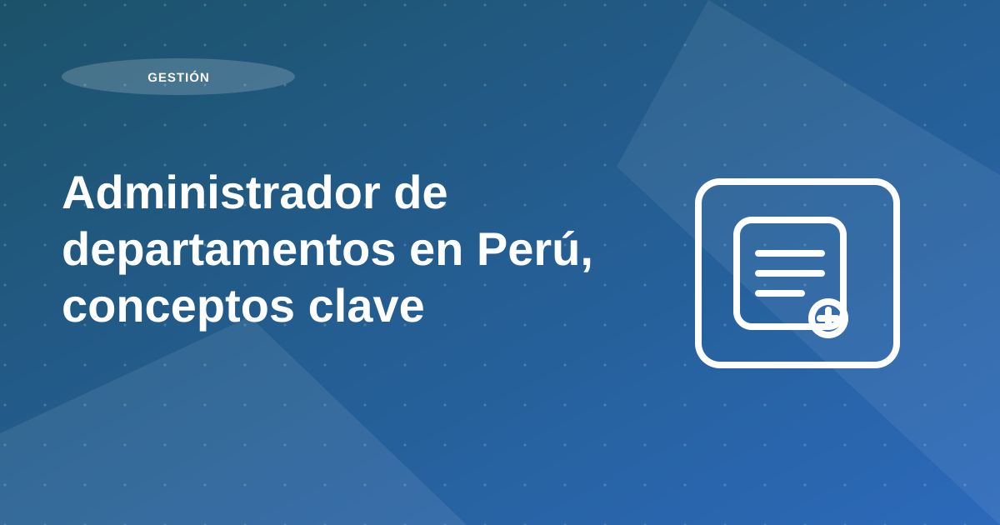

Administrador de departamentos en Perú, conceptos clave

Existe la idea de que la administración de departamentos es sencilla y solo consiste en hacer un par de llamadas. Sin embargo, cuando pones un departamento en alquiler en Lima , estás entrando en un ámbito de inversión donde la cobranza, el mantenimiento, la selección del inquilino y el control de incidencias impactan directamente tu rentabilidad.
Si administras por tu cuenta, la responsabilidad de coordinar con inquilinos, proveedores, inmobiliaria, administración de áreas comunes y atender incidencias es completamente tuya. También debes definir cómo cobrarás el alquiler, cómo manejarás moras, cómo publicitarás el departamento y cómo resolverás reparaciones.
En esta guía te explicamos qué hace un administrador de departamentos en Lima , cuándo conviene contratarlo y qué revisar para elegir bien.
Tabla de contenidos
- Qué es un administrador de departamentos en Lima (y por qué impacta tu inversión)
- Por qué contratar un administrador de propiedades en Lima
- Beneficios principales
- Qué maneja el administrador por ti
- Cómo recibes tu alquiler (cobranza y desembolso al propietario)
- Qué revisar en el sistema de cobranza
- Cómo interactúas con el administrador y cómo gestiona al inquilino
- Ventajas de una administración con tecnología
- Qué sucede cuando culmina el contrato de alquiler
Qué es un administrador de departamentos en Lima (y por qué impacta tu inversión)
Un administrador de departamentos (o administrador de propiedades) gestiona el alquiler de forma integral: selección del inquilino, contrato, cobranza, atención de incidencias, mantenimiento, reportes al propietario y procesos de salida/renovación. Su objetivo es reducir riesgos como morosidad, vacancia, daños y desgaste operativo.
Recomendación operativa: trabaja con KPIs simples (vacancia, puntualidad de pago, tiempos de resolución y renovaciones). Si no se mide, no se mejora.
Por qué contratar un administrador de propiedades en Lima
Tener un departamento en alquiler te permite generar ingresos y construir patrimonio, pero puede convertirse en un trabajo de tiempo completo. Un administrador con experiencia en el mercado de Lima te ayuda a ejecutar con procesos, rapidez y control.
Recomendación operativa: trabaja con KPIs simples (vacancia, puntualidad de pago, tiempos de resolución y renovaciones). Si no se mide, no se mejora.
Beneficios principales
- Menos carga operativa: coordinación, incidencias, cobranza y documentación.
- Mejores decisiones: mantenimiento, proveedores y evaluación del inquilino con estándares consistentes.
- Escalabilidad: puedes administrar más propiedades, incluso si no vives cerca del inmueble.
- Procesos y tecnología: trazabilidad, recordatorios, cálculo de mora y orden documental.
Recomendación operativa: trabaja con KPIs simples (vacancia, puntualidad de pago, tiempos de resolución y renovaciones). Si no se mide, no se mejora.
Qué maneja el administrador por ti
Estas son responsabilidades típicas en la administración de departamentos en Lima:
- Cobranza del alquiler: monitoreo de pagos, seguimiento y control de moras según contrato.
- Liquidación al propietario: recaudación y transferencia según lo acordado.
- Relación con inquilinos: comunicaciones, solicitudes, coordinación y reglas de convivencia.
- Mantenimiento y reparaciones: atención de incidencias, coordinación con proveedores y control de calidad.
- Red de proveedores: técnicos confiables y tiempos de respuesta definidos.
- Vacancia: publicación, filtros, visitas y coordinación para re-alquilar rápido.
Recomendación operativa: trabaja con KPIs simples (vacancia, puntualidad de pago, tiempos de resolución y renovaciones). Si no se mide, no se mejora.
Cómo recibes tu alquiler (cobranza y desembolso al propietario)
Un administrador suele trabajar con un sistema de recaudación para facilitar el pago del inquilino y asegurar orden en fechas, mora y comprobantes. Para el propietario, lo más común es la transferencia bancaria, y la modalidad debe quedar definida en el acuerdo de administración.
Recomendación operativa: trabaja con KPIs simples (vacancia, puntualidad de pago, tiempos de resolución y renovaciones). Si no se mide, no se mejora.
Qué revisar en el sistema de cobranza
- Cálculo automático o estandarizado de mora según contrato.
- Registro de pagos y comprobantes con trazabilidad.
- Protocolo de seguimiento ante atraso (mensajes, llamadas y escalamiento).
Recomendación operativa: trabaja con KPIs simples (vacancia, puntualidad de pago, tiempos de resolución y renovaciones). Si no se mide, no se mejora.
Cómo interactúas con el administrador y cómo gestiona al inquilino
Recomendación: elige administradores que usen sistemas online o apps para registrar incidencias, almacenar documentos y enviar reportes. Esto mejora el control y reduce tiempos muertos.
Recomendación operativa: define un score mínimo de aprobación antes de iniciar negociación final. Ese estándar evita excepciones por apuro comercial y protege la estabilidad de los cobros.
Ventajas de una administración con tecnología
- Información disponible para el propietario sin depender de correos o esperas.
- Control de tiempos de atención y cierre de incidencias.
- Canal simple para que el inquilino reporte necesidades y adjunte sustentos.
- Documentos del inmueble ordenados en un solo lugar (contrato, inventario, actas).
- Firma y logística más rápida para todas las partes.
Recomendación operativa: trabaja con KPIs simples (vacancia, puntualidad de pago, tiempos de resolución y renovaciones). Si no se mide, no se mejora.
Qué sucede cuando culmina el contrato de alquiler
Al acercarse el fin de contrato, el administrador coordina con el inquilino para definir renovación o desocupación y prepara el plan de acción.
Recomendación operativa: convierte cada obligación del contrato en un control verificable. Mientras más explícitos sean los criterios de pago, mantenimiento y entrega, menor fricción habrá durante la administración.
Plan de acción recomendado para propietarios
Para propietarios que delegan, el plan de trabajo debe empezar con un acuerdo de alcance: qué tareas cubre la gestión, qué no cubre y cómo se reporta cada frente operativo. Esta claridad evita fricciones y permite evaluar desempeño de forma objetiva.
Después del alcance, configura una rutina de seguimiento mensual con tablero de control. Debe incluir estado de cobro, incidencias, mantenimiento, renovaciones y próximos hitos. Una gestión profesional no solo ejecuta, también comunica con trazabilidad.
Finalmente, establece ciclos de mejora trimestral para ajustar reglas de operación, proveedores y estrategia comercial. Delegar bien significa evolucionar el sistema de gestión, no solo mantener tareas repetitivas.
- Definir SLA por tipo de incidencia.
- Estandarizar reportes mensuales.
- Auditar cumplimiento de pagos y contratos.
- Revisar plan de renovación trimestral.
Errores frecuentes y cómo evitarlos
Un error recurrente es delegar sin definir métricas de resultado. Sin métricas, cualquier percepción de calidad depende de casos aislados y no de desempeño real del sistema.
También falla la gestión cuando no existe un canal único de decisión para el propietario. La dispersión de mensajes y aprobaciones aumenta tiempos y reduce consistencia operativa.
Indicadores para medir resultados mes a mes
KPIs recomendados: tiempo medio de respuesta a incidencias, porcentaje de cumplimiento de cobranza en fecha, vacancia anual y porcentaje de renovaciones exitosas. Estos indicadores conectan operación diaria con resultados financieros.
Adicionalmente, monitorea el costo de gestión por inmueble y la variación frente al presupuesto. Esto permite evaluar eficiencia del servicio sin perder foco en calidad.
Preguntas frecuentes
¿Delegar administración significa perder control?
No. El control mejora cuando existen reportes, métricas y reglas de decisión claras.
¿Qué KPI debería revisar un propietario cada mes?
Vacancia, cumplimiento de pago, incidencias abiertas y tiempo de resolución.
¿Cuándo conviene cambiar el enfoque de gestión?
Cuando hay atrasos repetidos, falta de trazabilidad o rotación elevada sin plan de mejora.
Conclusión
Al revisar administrador de departamentos en perú, conceptos clave, la conclusión principal es que la rentabilidad no depende de una sola decisión, sino de la calidad del proceso completo: análisis previo, ejecución comercial, filtro, contrato y administración mensual.
Si priorizas estandarización, medición y mejora continua, reduces vacancia, controlas riesgo y sostienes mejores resultados para tu propiedad en el tiempo.